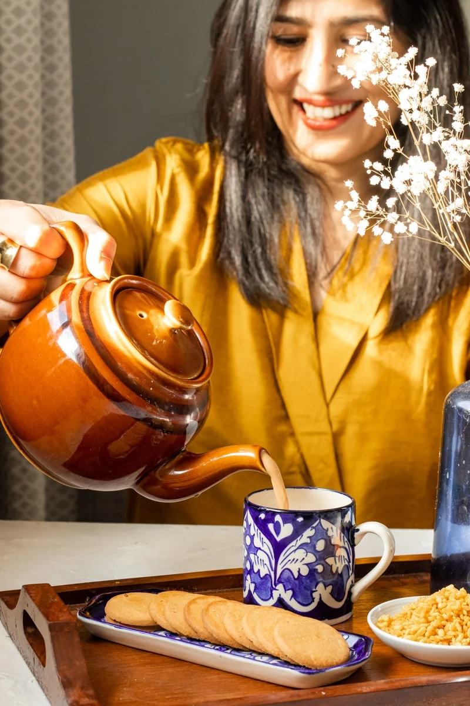

Meet Sarah
Hi there! My name is Sarah (pronounced Saa-Ra) and I am a Pakistani Food Blogger who shares her love for
cooking and baking at Flour & Spice. Whether it is traditional Pakistani recipes, the best cakes and
desserts or that fantastic burger, I believe in simplifying cooking without sacrificing flavor..

Hi, I'm Sarah!
Welcome to Flour & Spice, the foodie world of a Pakistani origin Canadian mama of two whose busy life
and love
for food means practicality reigns supreme! I love baking (duh!), my readers (extra duh!), reading,
coffee,
singing loudly slightly off key, and aprons.
I have been cooking and baking since I was little, but it is only in recent years that I have
learnt to love both the process and power of Pakistani cooking.
As a Pakistani origin Canadian with two girls, I realized when they were young that I
wanted them to love their heritage as much as I do, and the fastest way to that my friends
is a fantastic pulao, a comforting daal, and that creamy cold kulfi.
It's when I started seeing cooking Pakistani recipes as creating more than just food that I embraced its true power
and became enamored by the magic of it. Done right, cooking feels a little bit like empowering, healing,
and love rolled in to one.
This blog is my dream come true. So many years of eating your yummy desserts and hearing about the ones I didn't get to try. I am finally getting the chance to attempt some of them! Your writing is so true to you that I feel like I'm in the kitchen with you, cracking up at your little comments. Can't wait to visit you again and wake up to Carrot Cake Pancakes or Mixed Vegetable Quiche... heaven.
LoveYouLots!
AG
Thanks so much G!! Good thing you aren’t close by otherwise you would get lots of sloppy cuddles hehe